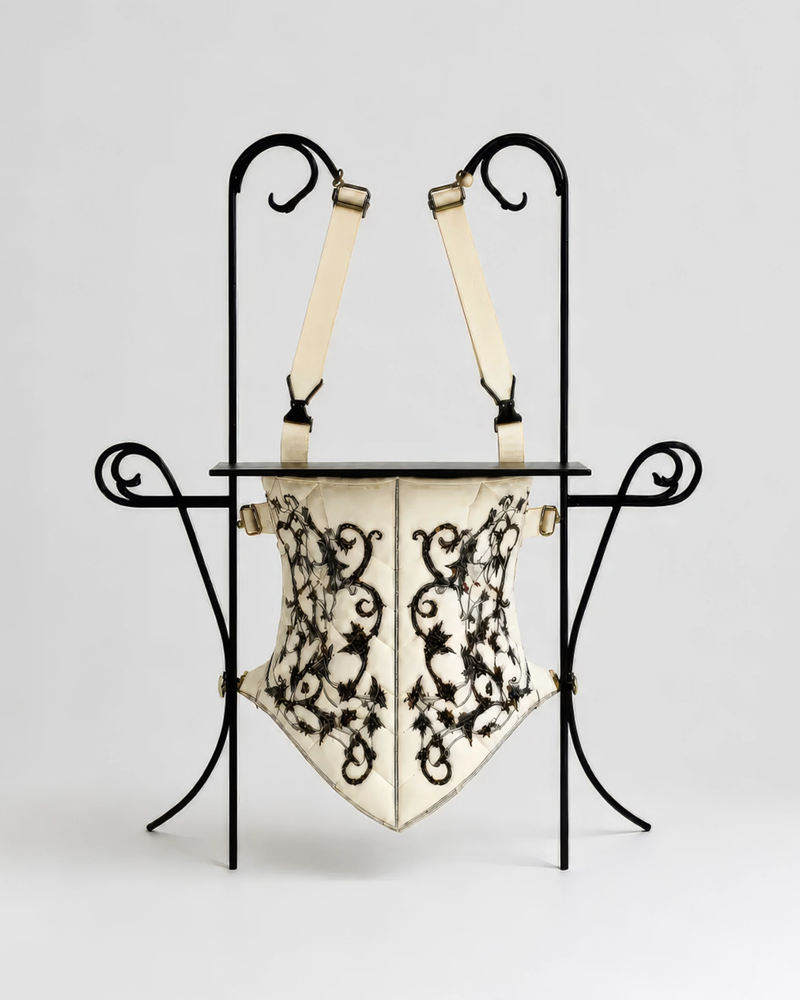

No.09 Adaptive Device
Fold Dining Harness, 2041
식사 공간을 신체 앞으로 이동시키기 위해 개발된 착용형 장치이다. 어깨를 중심으로 착용되며, 가슴 앞에 소형 식판을 고정한다. 사용자는 별도의 식탁이나 의자 없이도 서 있거나 벽에 기대어 식사를 할 수 있다.
- 크기/무게
- W: 55, H: 75(cm) / 5.2(kg)
- 재질
- 스틸 프레임, 면직물, 폴리에스터 충전재, 황동 연결 부품, 면 스트랩
- 사용 목적
-
식탁과 의자 제거
식사 공간의 최소화
좁은 공간에서도 이동과 식사를 동시에 수행 - 유도 자세
-
목을 약간 앞으로 숙인 자세
팔꿈치를 몸 가까이에 붙인 자세
식판과 얼굴 사이의 거리를 일정하게 유지
상체를 과도하게 움직이지 않는 자세 - 추정 환경
-
1인 원룸
복도형 주거
캡슐형 주거
주방과 생활 공간이 분리되지 않은 환경 - 추정 사용
- 장치를 양어깨에 착용한 뒤 접혀 있는 식판을 가슴 앞까지 펼쳐 고정했던 것으로 추정된다. 식사 시에는 팔꿈치를 몸 가까이에 유지하며 제한된 범위에서만 팔을 움직였고, 사용 후에는 식판을 접어 몸에 밀착한 상태로 생활을 이어간 것으로 보인다.
* 이미지에 마우스를 올려보세요.